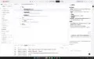

Journal · 2026-03-19
微信聊天记录
辅导员 : 嗯嗯，你看你什么时间有空呀 2026年3月19日 10:29 辅导员 : 你先去看病 2026年3月19日 10:29 吉姆哈克 : [图片] 2026年3月19日 10:29 吉姆哈克 : [图片] 2026年3月19日 10:29 吉姆哈克 : 我还有异常的脊柱要纠正 2026年3月19日 10:30 吉姆哈克 : 我从来都不驼背，但腰板太直了，直得不正常，没有自然“S”弧度 引用：****** ****** 2026年3月19日 10:30 吉姆哈克 : 我有空的时间在这里 2026年3月19日 10:32 吉姆哈克 : 但是要去见黎医生??????? 2026年3月19日 10:32 吉姆哈克 : 这什么意思啊？我没打0分啊，要改什么分数？ 引用：改的改的 2026年3月19日 10:33 吉姆哈克 : 团委告诉我，这个打分是完全匿名的，没人知道具体谁给谁打多少分 2026年3月19日 10:33 吉姆哈克 : 但是刘同学竟然怀疑我，让我很崩溃[发抖][发抖][发抖] 2026年3月19日 10:34 吉姆哈克 : 大一学年，你问我跟哪个同学很熟？我都说刘同学，他真诚善良、热情友好。他的室友也是活泼可爱、自信大方 2026年3月19日 10:35 辅导员 : 我打错了，我的意思是：好的好的 引用：这什么意思啊？我没打0分啊，要改什么分数？ 2026年3月19日 10:35 辅导员 : 嗯嗯，是的，你们两个人都很好 引用：大一学年，你问我跟哪个同学很熟？我都说刘同学，他真诚善良、热情友好。他的室友也是活泼可爱、自信大方 2026年3月19日 10:36 吉姆哈克 : 分享一些轻松的日常、有趣的想法、新奇的发现，大家都很愉快嘛 2026年3月19日 10:37
吉姆哈克 : 他甚至还跟我协商了“具体的脏话”，请我不要骂他妈妈 2026年3月19日 10:42 辅导员 : 被人允许但不建议这样做 2026年3月19日 10:42 吉姆哈克 : 我本来想骂： Fuck your mon ! You son of bitch ! Bloody hell ! 但他请我修改为： Fcuk you ！ You are a bitch ! Bloody hell ! 杀伤力明显减少了 2026年3月19日 10:44 吉姆哈克 : [图片] 2026年3月19日 10:44 吉姆哈克 : 而且我最后也没有骂他10000遍 2026年3月19日 10:44 吉姆哈克 : 只有1219遍，这都计数了 2026年3月19日 10:45 吉姆哈克 : 在一个包含两个班级同学的群里面，骂自己的熟识的好友，杀伤力有多大啊。还有，一句道歉的安慰效果，能有多强啊 引用：骂人一千遍就是你不对哈 2026年3月19日 10:47 吉姆哈克 : 举个栗子 2026年3月19日 10:47 吉姆哈克 : 大一学年，你有一次去女生宿舍查寝，检查了宿舍卫生 2026年3月19日 10:47 吉姆哈克 : 然后一个东边的同学，来我们宿舍串寝时，趣味盎然地说，听女生们说，辅导员去女生寝室查寝，还翻箱倒柜，翻动女生们的内衣，检查衣柜的卫生，所以有些女生很反感辅导员，就都转专业了 2026年3月19日 10:49 吉姆哈克 : 你会怎么调查这件事情的具体情况？ 2026年3月19日 10:49 吉姆哈克 : 那个串寝的同学，都转到经济学院了 2026年3月19日 10:50 吉姆哈克 : 你是公开发表声明？还是找到那个同学，私下骂他一顿？ 2026年3月19日 10:50 吉姆哈克 : 有些说人坏话的消息，就最好不要趣味盎然地讲出来。“了解情况”和“谈论八卦”是有严格界限的，也是有明显的氛围感受的 2026年3月19日 10:53 吉姆哈克 : 现在的故事，有新的篇章了。朱朱请我有空帮他搭建“电子黑奴”，就是电脑自动化机器人?? 引用：但是大龙虾和自动化机器人??，太有意思了，它能帮我们完成机械枯燥的“大量重复”工作，比如“骂人10000遍” 2026年3月19日 10:54 辅导员 : 这个不是造谣吗[捂脸]检查女生宿舍安全卫生是工作职责，但我从来都没有像你这个说的翻箱倒柜，翻动女生的内衣啥的。 引用：然后一个东边的同学，来我们宿舍串寝时，趣味盎然地说，听女生们说，辅导员去女生寝室查寝，还翻箱倒柜，翻动女生们的内衣，检查衣柜的卫生，所以有些女生很反感辅导员，就都转专业了 2026年3月19日 10:54 辅导员 : 我都不知道这个事情 引用：你是公开发表声明？还是找到那个同学，私下骂他一顿？ 2026年3月19日 10:55 辅导员 : 反正这个事情如果翻篇了，友好结束了就行哈 2026年3月19日 10:55
辅导员 : 你记得去找校医院复诊哈 2026年3月19日 11:08 辅导员 : 还有你之前开的药有在持续吃不 2026年3月19日 11:08 吉姆哈克 : 这个也翻篇了 引用：你记得去找校医院复诊哈 2026年3月19日 11:12 吉姆哈克 : 我也是常人啊 2026年3月19日 11:12 吉姆哈克 : 所有的药品，都跟不需要的书物，一齐寄回鄂东南了 引用：还有你之前开的药有在持续吃不 2026年3月19日 11:13 吉姆哈克 : [图片] 2026年3月19日 11:13 吉姆哈克 : [图片] 2026年3月19日 11:13 吉姆哈克 : [图片] 2026年3月19日 11:13 吉姆哈克 : 现在是这些问题了 2026年3月19日 11:14 吉姆哈克 : 我本来有32个牙胚，有28个牙位 引用：****** ****** 2026年3月19日 11:15 吉姆哈克 : 但后来，1个牙胚消失了，估计钙质被我吸收了 2026年3月19日 11:16 吉姆哈克 : 4个长出来的牙齿拔掉了，因为牙位拥挤 2026年3月19日 11:16 吉姆哈克 : 还有3个智齿，藏在牙床里，吸收我的钙质 2026年3月19日 11:16 吉姆哈克 : 大一学年，已经拔了2个智齿 2026年3月19日 11:17 吉姆哈克 : 目前还剩下1个智齿，右上角的 2026年3月19日 11:17 吉姆哈克 : 身体问题，是一看便知的 2026年3月19日 11:17 吉姆哈克 : 心理问题，是因人而异的 2026年3月19日 11:17 吉姆哈克 : 我过年期间，在B站上了解到，不少杀人犯都声称或被检测“患有躁狂症” 2026年3月19日 11:18 吉姆哈克 : 校医院当初为什么不给我判定为“抑郁症”，抑郁症的杀伤性和攻击性还较小呢 2026年3月19日 11:19 吉姆哈克 : 要是刘同学得知“吉姆哈克患有躁狂症”，那整个学院不得远离我、提防我呗 2026年3月19日 11:19 吉姆哈克 : 还有这个异常脊柱，困扰了我6年了，这比心理疾病危急多了[惊恐][惊恐][惊恐] 引用：****** ****** 2026年3月19日 11:21 辅导员 : 这个医生说怎么整治了吗 引用：还有这个异常脊柱，困扰了我6年了，这比心理疾病危急多了[惊恐][惊恐][惊恐] 2026年3月19日 12:16 吉姆哈克 : 要坚持，hold on 2026年3月19日 12:17 吉姆哈克 : 具体情况，得看这三个时间点： 3月?25日?8点 3月?29日?8点?45分 3月?31日?11点 2026年3月19日 12:17
吉姆哈克 : [图片] 2026年3月19日 11:27 吉姆哈克 : 这里的“前两任” 2026年3月19日 11:27 吉姆哈克 : 是指“现任和上一任” 2026年3月19日 11:27 吉姆哈克 : 还是“上一任和上上一任”？ 2026年3月19日 11:27 吉姆哈克 : [图片] 2026年3月19日 11:29 吉姆哈克 : [图片] 2026年3月19日 11:29 吉姆哈克 : 按照网络热度，我估计应该是“现任和上一任” 2026年3月19日 11:29 吉姆哈克 : 所以这个是交哪里啊？ 引用： DDL周四晚上十点 2026年3月19日 11:51 吉姆哈克 : 是交什么格式啊？ 2026年3月19日 11:51

吉姆哈克 : 可以尝试AI搭建小机器人 2026年3月19日 12:13 吉姆哈克 : 手搓真得太难了 2026年3月19日 12:14 吉姆哈克 : 你在B站中搜“影刀PRA”视频教程、 2026年3月19日 12:14 吉姆哈克 : 可以学一学，但学习成本太高了 2026年3月19日 12:14 吉姆哈克 : 这笔大龙虾划算多了 2026年3月19日 12:15 吉姆哈克 : 也确实很好用！ 2026年3月19日 12:15 朱念龙 : [哇] 2026年3月19日 12:26 朱念龙 : 阔以阔以 引用：也确实很好用！ 2026年3月19日 12:26 朱念龙 : 膜拜梅大佬 引用：手搓真得太难了 2026年3月19日 12:26
朱念龙 : 我去可以可以 引用：对啊，是更新的 2026年3月19日 18:02 朱念龙 : 怎么不是19时？ 引用：[图片] 2026年3月19日 18:03 吉姆哈克 : 微软官网就是12时制的 2026年3月19日 18:04 吉姆哈克 : 微软的天气官网 2026年3月19日 18:04 吉姆哈克 : 当然，我也可以用python语法设置成12时制 2026年3月19日 18:04 吉姆哈克 : 但这有点麻烦 2026年3月19日 18:05 吉姆哈克 : 我可以去标准时钟网站，复制个24时制的 2026年3月19日 18:05 吉姆哈克 : 然后粘贴到那个消息位置那 2026年3月19日 18:05 吉姆哈克 : 不是，不是，不是 引用： 怎么不是19时？ （调试输出省略） wxid**** 2026年3月19日 18:14 吉姆哈克 : 我刚看了一下气温折线图 2026年3月19日 18:14 吉姆哈克 : 就是凌晨7点钟 2026年3月19日 18:14
吉姆哈克 : 三舅，现在天气是：室外现在凉爽，温度为 13°。06:00 至 07:00 之间将会略有寒意。 2026年3月19日 18:49 三舅 : 好的 2026年3月19日 18:50 吉姆哈克 : 机器人半个小时发送一次 2026年3月19日 18:51 吉姆哈克 : 可以设置成“消息免打扰” 2026年3月19日 18:51 吉姆哈克 : 这是软件机器人发的 引用：三舅，现在天气是：室外现在凉爽，温度为 13°。06:00 至 07:00 之间将会略有寒意。 2026年3月19日 18:51 吉姆哈克 : [图片] 2026年3月19日 18:51 吉姆哈克 : [图片] 2026年3月19日 18:51 吉姆哈克 : 二舅和妈妈，都收到了 2026年3月19日 18:52 吉姆哈克 : 三舅，现在天气是：室外现在凉爽，温度为 13°。06:00 至 07:00 之间将会略有寒意。 2026年3月19日 19:00 吉姆哈克 : 三舅，现在天气是：室外现在凉爽，温度为 12°。00:00 至 07:00 之间将会略有寒意。 2026年3月19日 19:30 吉姆哈克 : 三舅，现在天气是：室外现在凉爽，温度为 12°。06:00 至 07:00 之间将会略有寒意。 2026年3月19日 20:00
吉姆哈克 : 阿妈，现在天气是：室外现在凉爽，温度为 12°。06:00 至 07:00 之间将会略有寒意。 2026年3月19日 20:31 吉姆哈克 : 阿妈，现在天气是：室外现在凉爽，温度为 11°。00:00 至 07:00 之间将会略有寒意。在凉爽，温度为 11°。00:00 至 07:00 之间将会略有寒意。现在没有紫外线。室外非常潮湿，湿度为86%。大约03:00 时会感到潮湿。当前风速4 公里/小时。 2026年3月19日 20:57 吉姆哈克 : 阿妈，此时此刻，室外现在凉爽，温度为 11°。06:00 至 07:00 之间将会略有寒意。 2026年3月19日 21:00 吉姆哈克 : 在凉爽，温度为 11°。00:00 至 07:00 之间将会略有寒意。现在没有紫外线。室外非常潮湿，湿度为86%。大约03:00 时会感到潮湿。当前风速4 公里/小时。 2026年3月19日 21:00 吉姆哈克 : 阿妈，此时此刻，室外现在凉爽，温度为 11°。06:00 至 07:00 之间将会略有寒意。 2026年3月19日 21:02 吉姆哈克 : - 今天大部分地区多云。现在没有紫外线。室外非常潮湿，湿度为86%。大约03:00 时会感到潮湿。当前风速4 公里/小时。 2026年3月19日 21:02 吉姆哈克 : 阿妈，此时此刻，室外现在凉爽，温度为 11°。06:00 至 07:00 之间将会略有寒意。 2026年3月19日 21:03 吉姆哈克 : 今天大部分地区多云。现在没有紫外线。室外非常潮湿，湿度为86%。大约03:00 时会感到潮湿。当前风速4 公里/小时。 2026年3月19日 21:03 吉姆哈克 : 阿妈，此时此刻，室外现在凉爽，温度为 11°。06:00 至 07:00 之间将会略有寒意。 2026年3月19日 21:05 吉姆哈克 : 今天大部分地区多云。现在没有紫外线。室外非常潮湿，湿度为86%。大约03:00 时会感到潮湿。当前风速4 公里/小时。 2026年3月19日 21:05
吉姆哈克 : MSN微软天气 2026年3月19日 20:59
吉姆哈克 : 二舅，此时此刻，室外现在凉爽，温度为 11°。06:00 至 07:00 之间将会略有寒意。 2026年3月19日 21:05 吉姆哈克 : 今天大部分地区多云。现在没有紫外线。室外非常潮湿，湿度为86%。大约03:00 时会感到潮湿。当前风速4 公里/小时。 2026年3月19日 21:05
吉姆哈克 : 这个自动化机器人??，就跟搭积木一样，一步一步搭建好的 2026年3月19日 21:11 吉姆哈克 : 但是要会点Python代码，特别是字符串的拼接 2026年3月19日 21:11 二舅 : 你帮三舅妈搭建一个自动卖东西收钱的东西 2026年3月19日 21:11 吉姆哈克 : 我还是设置成3个小时间隔，比较实用，每半个小时没有什么变化 引用： （调试输出省略） 2026年3月19日 21:12 吉姆哈克 : [图片] 2026年3月19日 21:13
吉姆哈克 : 到时候，钱没了，打官司都不知道告谁 2026年3月19日 21:15 二舅 : 告机器人开发者 2026年3月19日 21:16 吉姆哈克 : 是可以告 2026年3月19日 21:16 吉姆哈克 : 但是市场上，没人开发“收账”“支付”的机器人?? 2026年3月19日 21:17 吉姆哈克 : “收账”也不需要机器人，买家付给你钱了，就是付了，不需要自己收呀 2026年3月19日 21:17 吉姆哈克 : [图片] 2026年3月19日 21:19 吉姆哈克 : 拼多多上，已经有机器人了 2026年3月19日 21:19 吉姆哈克 : 店家人不在线，机器人??就已经回复我了 2026年3月19日 21:20 二舅 : 牛 2026年3月19日 21:20
朱念龙 : 可以可以 引用：我先把我的家人屏蔽掉，每隔一分钟给你发一个 2026年3月19日 21:38 朱念龙 : 让我感受下 2026年3月19日 21:39 吉姆哈克 : 朱念龙，此时此刻，室外现在凉爽，温度为 13°。 2026年3月19日 21:41 吉姆哈克 : 今天大部分地区多云。现在没有紫外线。室外潮湿，湿度为79%。从 02:00 到 09:00 会感到 非常潮湿。当前风速4 公里/小时。 2026年3月19日 21:41 吉姆哈克 : 天气网址，我换成武汉市洪山区了 2026年3月19日 21:41
吉姆哈克 : 我单独给你创建了一个机器人 2026年3月19日 21:42 吉姆哈克 : 准备好，接下来每隔一分钟就发你一下 2026年3月19日 21:42
吉姆哈克 : 朱念龙，此时此刻，室外现在凉爽，温度为 13°。 2026年3月19日 21:44 吉姆哈克 : 今天大部分地区多云。现在没有紫外线。室外潮湿，湿度为79%。从 02:00 到 09:00 会感到 非常潮湿。当前风速5 公里/小时。 2026年3月19日 21:44 吉姆哈克 : 朱念龙，此时此刻，室外现在凉爽，温度为 13°。 2026年3月19日 21:45 吉姆哈克 : 今天大部分地区多云。现在没有紫外线。室外潮湿，湿度为79%。从 02:00 到 09:00 会感到 非常潮湿。当前风速5 公里/小时。 2026年3月19日 21:45 吉姆哈克 : 下一分钟，机器人??工作时，我就录个屏，给你看 2026年3月19日 21:46 吉姆哈克 : 朱念龙，此时此刻，室外现在凉爽，温度为 13°。 2026年3月19日 21:46 吉姆哈克 : 今天大部分地区多云。现在没有紫外线。室外潮湿，湿度为79%。从 02:00 到 09:00 会感到 非常潮湿。当前风速5 公里/小时。 2026年3月19日 21:46 吉姆哈克 : 好了，好了，我演示完了 2026年3月19日 21:47 吉姆哈克 : 明天再给你发天气，每隔六小时发一次 2026年3月19日 21:48 朱念龙 : 我的天，还能创几个吗？ 引用：我单独给你创建了一个机器人 2026年3月19日 21:53 吉姆哈克 : 这本来就是免费的 2026年3月19日 21:54 朱念龙 : 电子黑奴还是强大 引用：wxid****:20:0 2026年3月19日 21:54
吉姆哈克 : 不需要Token 2026年3月19日 21:54 朱念龙 : token是啥？ 2026年3月19日 21:55 吉姆哈克 : 就是人工智能处理的材料基本单位 2026年3月19日 21:55 吉姆哈克 : 可以理解为小短语，小单词,词语 2026年3月19日 21:55 吉姆哈克 : 但它还有个引申的意思，就是这些基本单位所消耗的费用，消耗的钱，消耗的人民币 2026年3月19日 21:55 吉姆哈克 : 也可以叫Token 2026年3月19日 21:56 吉姆哈克 : 还有消耗人家大模型的算力 引用：但它还有个引申的意思，就是这些基本单位所消耗的费用，消耗的钱，消耗的人民币 2026年3月19日 21:56
朱念龙 : 我去，那这样看更强大了 引用：只需要电力和网速 2026年3月19日 21:57
吉姆哈克 : 明天早上6点钟，准时给你发天气 2026年3月19日 21:57
朱念龙 : 你只需要给他指令吗？ 2026年3月19日 21:57 朱念龙 : 都不用说具体步骤？ 2026年3月19日 21:57 吉姆哈克 : 可以理解为，可视化编程 2026年3月19日 21:58 吉姆哈克 : 就是把网络爬虫中，用到的一些基本步骤，一些常用函数，包装成一个积木 2026年3月19日 21:58 吉姆哈克 : 我们只需要“搭积木”就行了 2026年3月19日 21:58 吉姆哈克 : “搭积木”，就是我说的“手搓模式” 2026年3月19日 21:58 吉姆哈克 : 你要是请他配套的AI，帮你搭建，那就是“智能模式” 2026年3月19日 21:59 吉姆哈克 : “手搓模式”，也不简单，但是学会了就熟练多了 引用：“搭积木”，就是我说的“手搓模式” 2026年3月19日 21:59 吉姆哈克 : 朱念龙，此时此刻，室外现在凉爽，温度为 13°。 2026年3月19日 23:26 吉姆哈克 : 今天大部分地区多云。现在没有紫外线。室外潮湿，湿度为81%。从 02:00 到 09:00 会感到 非常潮湿。当前风速4 公里/小时。 2026年3月19日 23:26